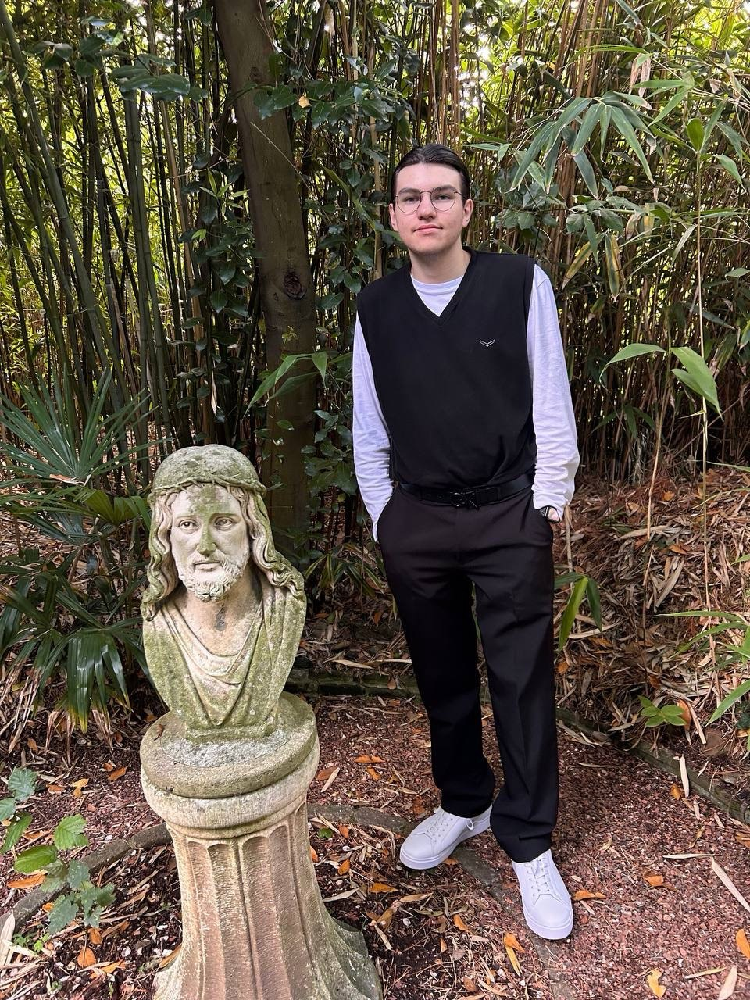
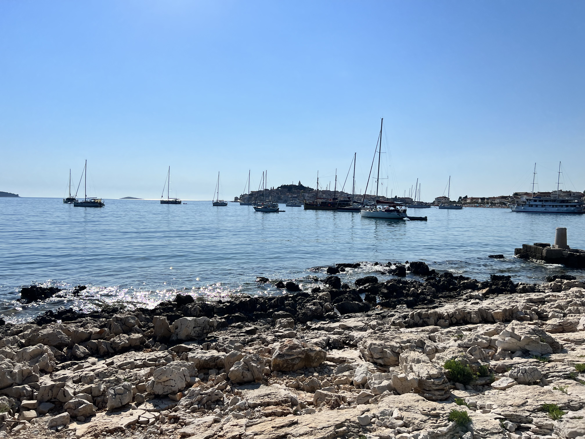
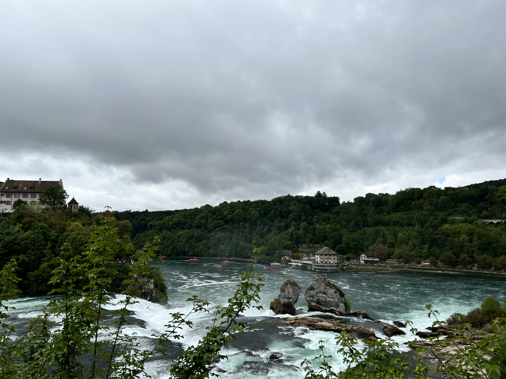
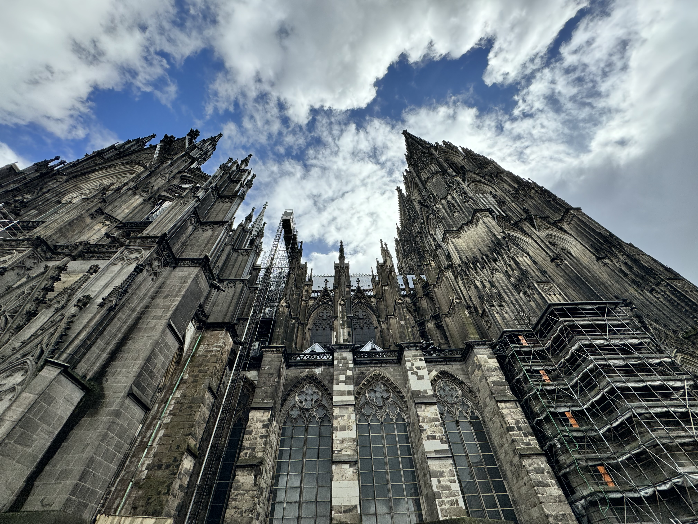
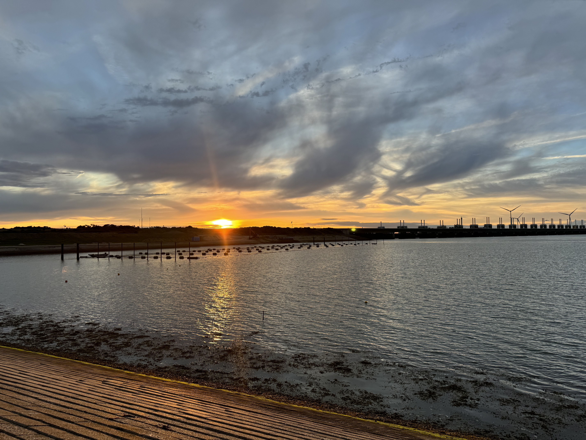
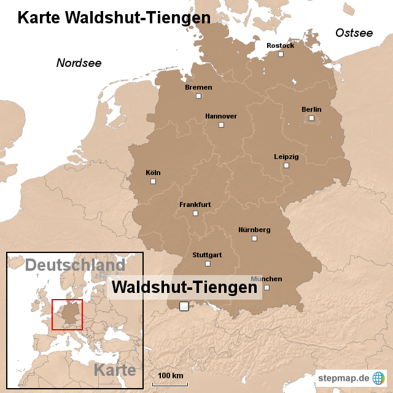

My Portfolio
Thanks for taking your time and being here. Welcome!

Pick your topic:
Job training / Ausbildung zum Anwendungsentwickler
Since November 01, 2023
I am a dedicated Frontend Developer currently in training at ONTIV GmbH, where I work on a variety of exciting projects. In my role, I build, modify, and debug customer-facing views using Angular 18, always focusing on clean code and excellent user experiences. I work closely with the MVC architecture and use C# to fix issues and support backend logic. Additionally, I write Unit Tests using .NET and C# to ensure code quality.
I have extensive experience working with databases and frequently use HeidiSQL, Docker, and Artificial Intelligence. For frontend development, I utilize various frameworks and technologies, including Bootstrap, Angular Material, and more. In my daily work, I use languages such as C#, TypeScript, HTML5, CSS3, CSHTML, and occasionally VB. My goal is to continuously enhance my skills and create innovative, user-friendly solutions that combine both functionality and aesthetics.
Vocational Qualification in Computer Science & IT Specialist (Fachabitur Informatik & ITA Ausbildung)
August 23, 2021
In the two years at BBS Betzdorf-Kirchen, I have learned countless theoretical concepts in IT. Whether it's programming in Processing (Java), HTML, and CSS, or C#, we covered the basics of cybersecurity, networking, databases, and much more.
During my time at BBS Betzdorf, I gained a solid foundation in various areas of IT:
- Java (Processing): Focused on graphical programming.
- Frontend Development: Basics of HTML and CSS.
- Networking: Introduction to network infrastructure and protocols.
- Databases: Initial experience with relational databases and SQL.
- Microsoft Office: Certified course for efficient use of Office programs.
- Object-Oriented Programming (OOP): Practical implementation with C# .NET.
- Hardware Basics: Knowledge of PC components and their functionality.
Final Project:
Development of an RFID time tracking system:
The RFID chip was scanned by a reader. The recorded status was displayed with a timestamp on a custom-built webpage.
Intership / Praktikum
August 23, 2021
During my 16-week internship at Hoppmann Autowelt GmbH as a system integrator, which I voluntarily extended by two additional weeks, I gained a different perspective on IT. Instead of sitting in front of a computer, I replaced PCs, toner, or even entire printers. My main task was to support the IT team by taking over some of their responsibilities. When I worked on software-related tasks, such as writing a script in Batch, I found it far more enjoyable. This led me to decide to pursue a career in software development after school instead of focusing on hardware.
My internship as an IT systems integration specialist provided valuable hands-on experience:
- Hardware Knowledge: Replacement and maintenance of PC components.
- Building PCs: Both during the internship and in personal projects.
Personal Projects
- Operating Systems: Primarily work with Windows, occasionally with macOS and Linux (e.g., Kali Linux, Ubuntu).
- App Development: First steps with Swift, such as creating a small weather app for the iPhone.
- Programming: Started with Python for small scripts, which was my first programming language.
Pictures

📍Primošten, Croatia

📍Rheinfall, Switzerland

📍Cologne, Germany

📍Kamperland, Netherlands

📍Pisa, Italy
Goals & Life Plans — Interview
Setting clear goals and continuously striving to improve is very important to me. In this interview, I share my professional ambitions, personal visions, and how I plan to grow in the coming years.
A: In the next 3 to 5 years, I aim to learn as much as possible and continuously expand my knowledge. It is important to me to explore and understand various technologies and techniques in order to work flexibly and competently. My goal is to find a position in Switzerland, as I highly value the professional opportunities there and can imagine living there long-term.
A: I want to live in Switzerland or at least in my homeland, Baden-Württemberg. Although I currently live in NRW, I miss the south every day. I grew up there, my family lives there (in Switzerland and Baden-Württemberg), and that is where I feel at home. However, I would also be open to living in Rheinland-Pfalz or Hessen, as I have no problem with those regions.
A: I enjoy working in web development but have no problem exploring new directions. I'm also interested in Geo-IT and cybersecurity. What I want to improve most is my understanding of new things and technologies.
A: For me, feeling comfortable in my environment is crucial — both where I live and at work. You can't put it into numbers, but if the work is fun and you learn new things, time flies and you can naturally work more. I also really appreciate flexible working hours, as some days I prefer to work shorter and other days longer.
A: I don’t have one specific project in mind because every project is unique in its own way. I simply want to support the company and future team by lending a hand. I want to realize customer projects and receive feedback.
About me
I was born on February 26, 2004, in Waldshut-Tiengen, located in the Hochrhein region of Baden-Württemberg. Due to my father's new job, our family moved to Donaueschingen in the Black Forest. I spent my childhood and teenage years there until I turned 16, attending the Realschule Donaueschingen up to the 10th grade. Due to personal conflicts, I relocated to Siegen, about a four-hour drive north. There, I completed my secondary education at the Realschule am Oberen Schloss.

Source: stepmap.de
Education
After my experiences in Siegen, I decided to pursue further education instead of immediately entering an apprenticeship. I enrolled at the BBS Betzdorf-Kirchen, where I had some of the best years of my academic journey. The supportive teachers and friendly classmates made this time unforgettable, and I remain in contact with many of them to this day.
Photo: BBS Betzdorf-Kirchen
Spoken Languages
- German (Native)
- English (Fluent)
- Russian (Basic)
Personal Interests
Geography
I enjoy learning about capitals, flags, and world cultures.
Traveling
Whether it's a short day trip or a longer journey, I love exploring new places.
Photography
Capturing moments through my lens is a hobby I cherish.